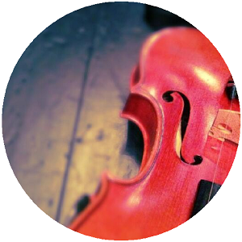
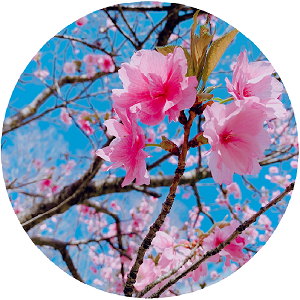
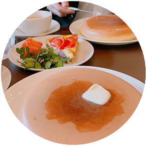

You & Me
PROFILE
- name 高橋 悠実 Takahashi Yumi
- sex 女
- birth date 1997.04.14
- age 22
- place of birth 新潟県 新潟市
- education 2020年3月 奈良女子大学 化学生物環境学科 卒業予定
- hobby オーケストラでの演奏（バイオリン：12年継続中）、韓国語勉強（独学)、水泳
現在就職活動中。
大学の授業で２年間C言語を習いましたが、かじった程度です。日々勉強中。
目標は卒業までに動きのあるサイトを作ること。
inputからのoutput成功に喜びを感じる人間。人生は楽しく生きたい。